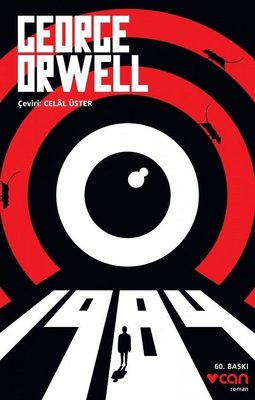

Ürünler
- Suç ve Ceza - Fyodor Mihaylovic Dostoyevski
Tüm zamanların en çok konuşulan romanlarından Suç ve Ceza, psikolojik derinliği ve topluma tuttuğu aynayla gündemde kalmaya devam ediyor. St. Petersburg’dan dünyaya yayılan, hatta sınırlarını edebiyatın dışına çıkararak tartışma platformlarına ve sinema festivallerine taşıyan bu yapıt, tekrar tekrar okunmaya ve konuşulmaya değer!
Fiyat : 55tl - Simyacı - Paulo Coelho
Dünya edebiyatının fenomenleri arasında yer alan Simyacı, yayımlandığı günden bugüne pek çok hayata dokunmaya devam ediyor. Brezilyalı yazar Paulo Coelho tarafından 1988 yılında yayımlanan eser, Doğu ve Batı dünyasına aynı pencereden ışık tutuyor. Coelho’nun Mesnevi’deki bir kıssadan hareketle kaleme aldığı Simyacı, macera dolu öyküsü ve felsefi yönüyle başucu kitabınız olmaya aday!
Fiyat : 20tl - Kürk Mantolu Madonna - Sabahattin ALİ
İlk baskısı 1943 yılında yapılan Kürk Mantolu Madonna, günümüzde halen en çok ilgi gören ve satılan kitaplar arasında bulunuyor. Basıldığı günden bu yana 1 milyondan fazla satan kitap üzerine, birçok araştırma ve inceleme yapılmış, hakkında tezler yazılmış, fakat bu başarısının sırrı tam olarak çözülememiştir. Onu bu kadar özel kılan ve hala konuşuluyor olmasındaki en büyük pay, tabii ki Sabahattin Ali’nin usta kalemi ve başarılı ruh tahlilleridir
Fiyat : 30tl - 1984 - George Orwell
Distopya olarak nitelendirilen George Orwell’ın bu şahane eseri, geçmişin aslında ne kadar da gelecekten izler taşıdığını ortaya koyuyor. 1948’de kaleme aldığı bu eser ile Orwell, günümüz modern dünyasına bir protesto bırakıyor. Her ne kadar kitabında 1984 yılını tasvir etse de kitabın derinliklerinde bugünden izler de bulabilmeniz mümkün. Bu durumda elbette ki George Orwell’ın ileri görüşlülüğü etkili.
Fiyat : 45tl


